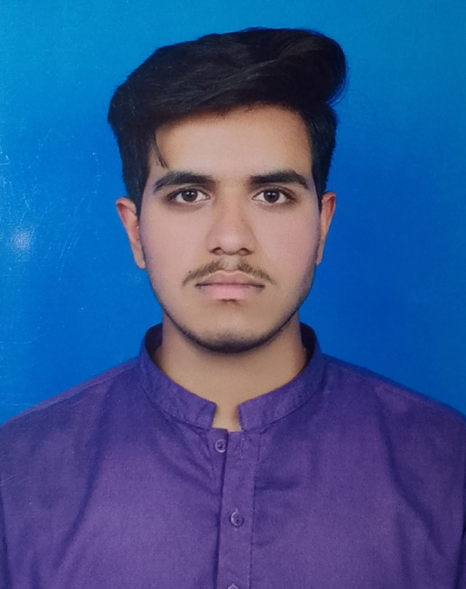

SAAD AWAN
ISLAMABAD,PAKISTAN
0300-9807218 saadawan6566@gmail.com
linkedln:Saad_devOpss

OBJECTIVE
Detail-oriented and solution-driven software developer with 2 years of experience in developing robust applications and systems.
Adept in Python, Java, JavaScript, C++ and passionate about leveraging technology to solve complex problems.Eager to bring
my skills to a dynamic software company to contribute to innovative projects and grow professionally.
EDUCATION
Bachelor of Science in Computer Science.
NUML University — Islamabad.
Graduated: February 2023.
Relevant Coursework: Data Structures, Algorithms, Software Engineering, Database Systems, Web Development.
FSC (Pre-Engg)
Fazaia Inter College - Rawalpindi.
Graduated: September 2018.
MATRIC (Computer Science)
Fazaia Inter College - Peshawar.
Graduated: September 2016.
SKILLS
- Programming Languages: Java, Python, C++, JavaScript.
- Web Technologies: HTML, CSS, React, Node.js.
- Database Management: MySQL, MongoDB, PostgreSQL.
- Frameworks: Git, Docker, Kubernetes, Angular.
- Development Methodologies: Agile, Scrum, Test-Driven Development (TDD)
- Version Control: Git, GitHub, GitLab
- Cloud Platforms: AWS, Azure, Google Cloud.
- Others: Problem-solving, communication, team collaboration.
WORK EXPERIENCE
-
Software Developer.
M TECHUB LLc — Islamabad,Pakistan.
From 2024 - Present.
Developed and maintained that improved business outcome, e.g., performance, user experience.
Wrote clean, efficient, and maintainable code in programming language(s).
Collaborated with cross-functional teams to define, design, and ship new features.
Implemented database solutions to manage and store data types.
Participated in code reviews to ensure high-quality standards.
-
Junior Software Developer.
OmniSoftex Inc - Islamabad,Pakistan.
From 2023 - 2024.
Assisted in the development of web-based applications and backend services using technologies/tools.
Designed and implemented RESTful APIs for specific use case.
Optimized application performance by identifying and resolving bottlenecks.
Wrote unit tests and performed debugging to ensure reliability and scalability.
Supported senior developers in architectural decisions and system maintenance.
LANGUAGES
- English - Fluent
- Urdu - Fluent